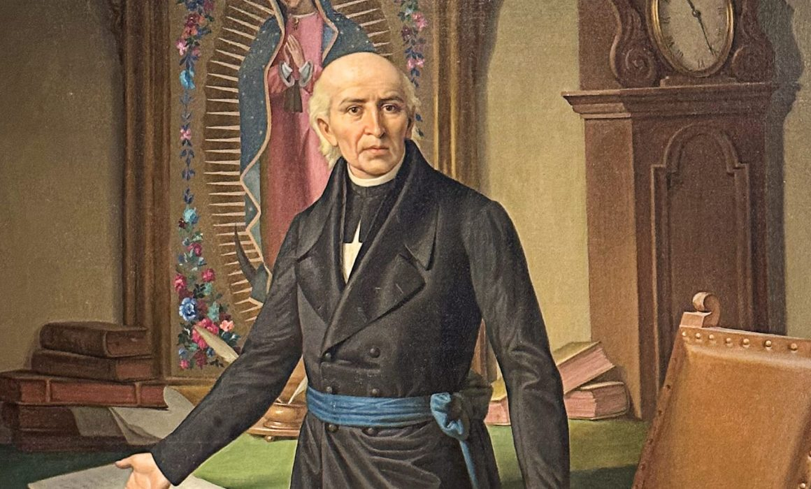

Galeria


Miguel Hidalgo y Costilla (1753–1811) was a Mexican priest and a national hero who is known as the Father of Mexican Independence. He was born on May 8, 1753, in Guanajuato, Mexico. As a young man, he studied at the Colegio de San Nicolás, where he later became a teacher and eventually the school’s rector. Hidalgo was very intelligent and spoke several Indigenous languages, which helped him communicate with the people in his community.
Hidalgo became concerned about the unfair treatment of Indigenous people and poor farmers under Spanish rule. He believed that everyone deserved better living conditions and more freedom. These ideas inspired him to join a secret group that was planning to fight for independence from Spain.

On September 16, 1810, Hidalgo delivered his famous speech known as the Grito de Dolores. In this speech, he called on the people to rise up against the Spanish government. This event marked the beginning of the Mexican War of Independence. After the speech, thousands of people joined him, forming an army of common citizens.
Although Hidalgo was not a trained military leader, he inspired many people with his courage and strong beliefs. His army won some early battles but later suffered several defeats. In 1811, he was captured by Spanish forces and executed on July 30 of the same year.